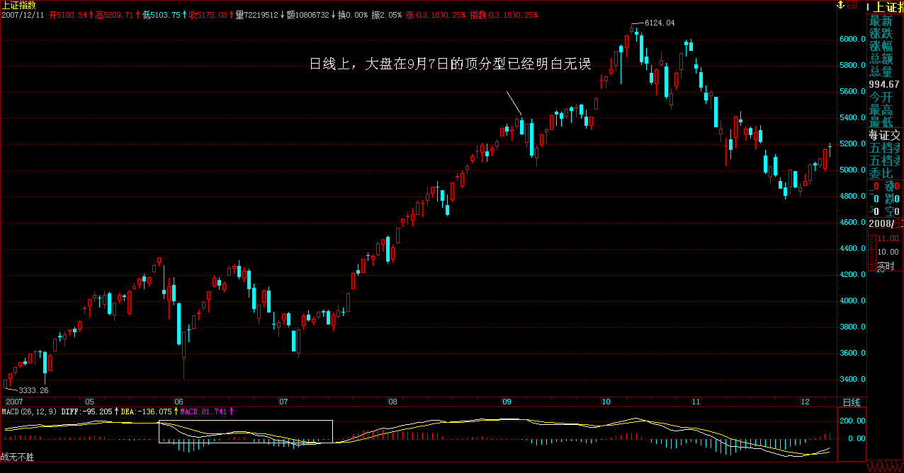
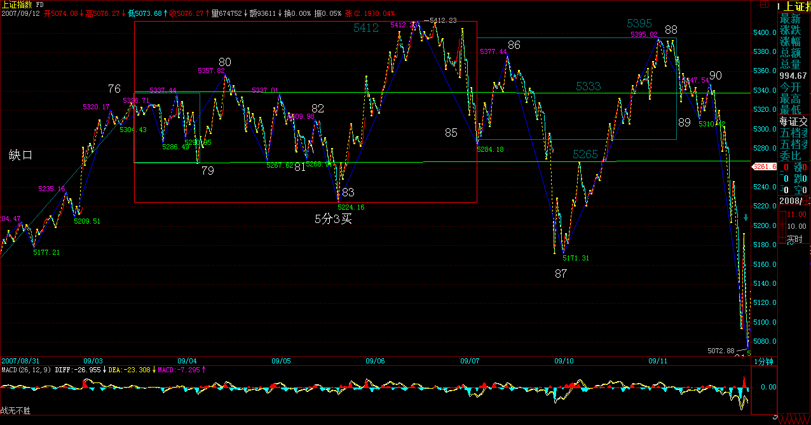
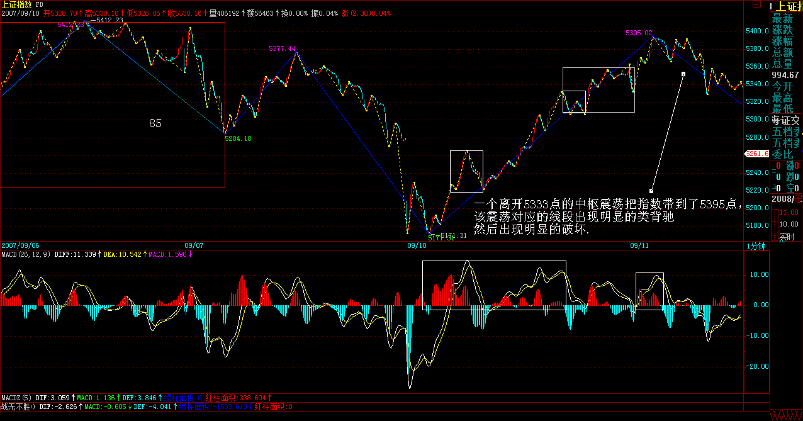
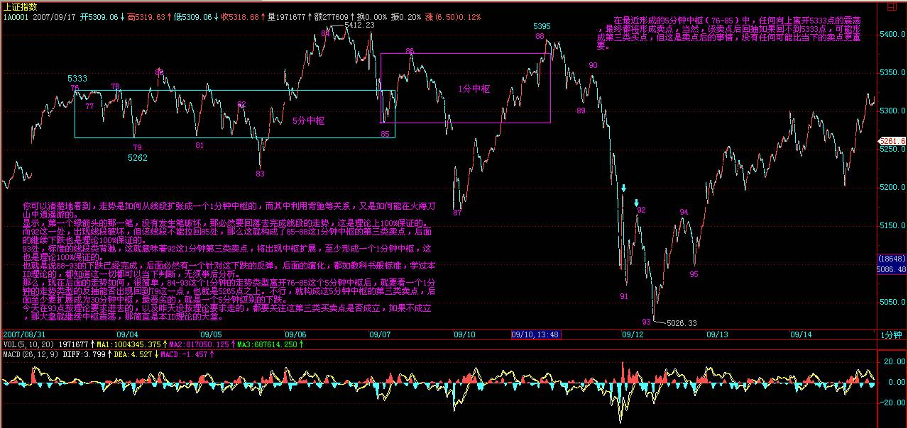
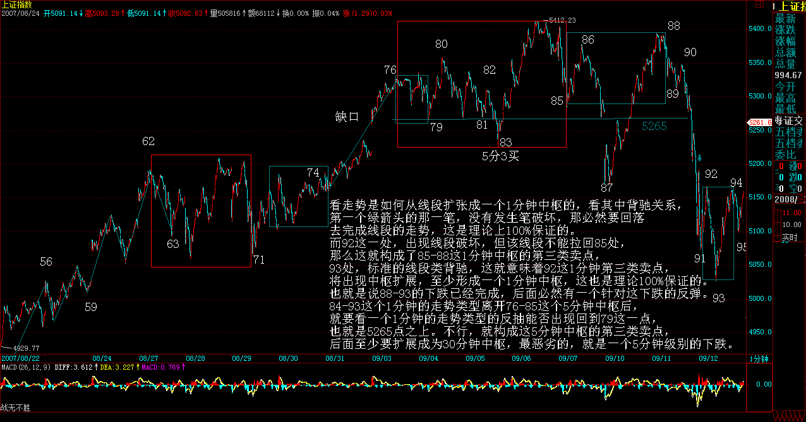
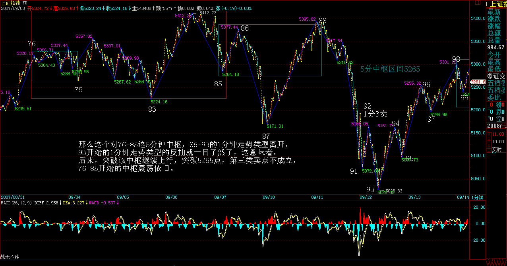
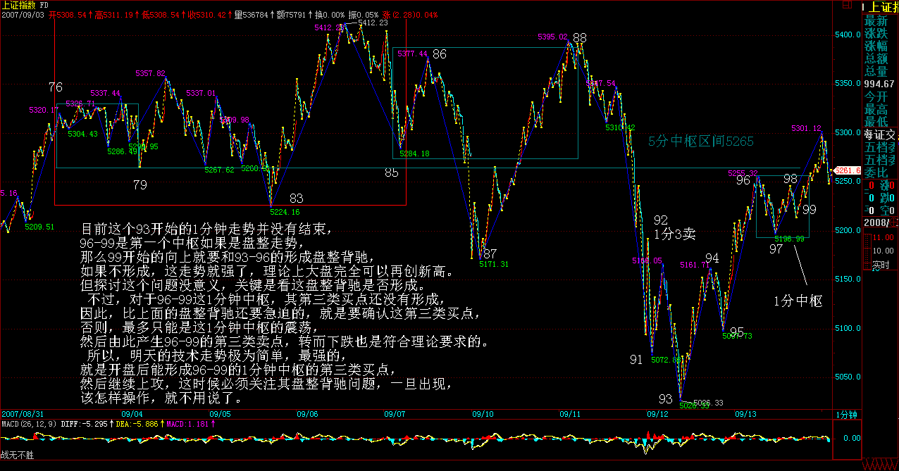
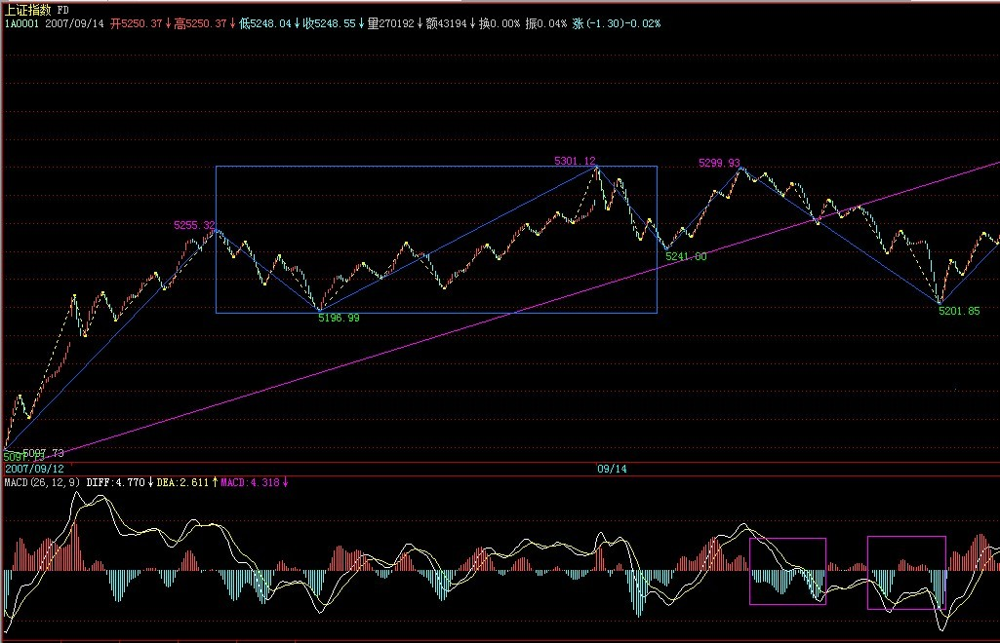

|
 |
教你炒股票80：市场没有同情、不信眼泪
(2007-09-11 21:38:07)
今天本应该说点别的，但市场一跌，大多数人都没什么心情看别的，所以不妨再说一下股票。而股票又何曾就是股票？把股票只当成股票，那当然会被股票所缠。
股票从来就不是股票，而是你的贪嗔痴疑慢；没有任何的失败相关于股票，而只关于你的贪嗔痴疑慢，股票不过是一个幌子，一个道具。
在西方，真正在资本市场上有成就的，基本都成了哲学家。没有对市场的洞察，靠整天这消息、那题材地折腾，那永远只能在散户的区间中震荡。有此眼界，不一定能达此高度，毕竟眼高手低也是通病；但无此眼界，就一定不可能达此高度。
本ID有时候喜欢用一些刺激性的词语，为什么？就如棒喝，就是要刺痛你，激发你的贪嗔痴疑慢，这样才有醒的一天。所有希望来市场寻找温情、同情、眼泪的，都可以回家磨豆腐，这些玩意，市场里什么时候曾有过？
在市场里要成功，除了比市场还要强悍，别无他法。市场出现卖点，你还幻想着火星，那就回火星去吧，地球需要的是手起刀落的强悍。
这次，提供了一个绝佳的例子，那么，不妨看看所有没有强悍的究竟都犯了什么毛病？注意，这不是批斗会，而是严肃的解剖，无论你现实中具体如何操作，都有解剖的必要。
市场，没有逻辑，本ID的理论给了市场以逻辑。
一、所有的顶点都必然是顶分型。
这是本ID理论的一个最简单的结论。从这可以严格推导出什么？就是一旦出现顶分型，离开就是唯一的选择。至于顶分型后是否形成笔，那是离开后再判断的事情。顶分型后，无非两种选择：1、形成笔，也就是构成一个底分型与顶分型间有不共用的K线。2、不形成笔，也就是构成的底分型与这顶分型之间只有共用的K线。

但无论哪种选择，都有足够的空间让你的反应，如果是第一种，那调整是大的，第二种，调整是小的，这，在昨天，本ID专门写的课程里有很多例子反复说明了。为什么？因为本周，3600点以来第一次有绝大的可能出现周线上的顶分型，这可不是今天才说的。
那么，这么明确地知道了这一点，按照市场的逻辑，正如昨天的课程里反复强调的“注意，顶分型的时候是形成顶分型那天冲高卖，而不是收盘等顶分型都很明确了再走”，那么对于周K线，这一点是一样的。
而日线上，大盘在9月7日的顶分型已经明白无误。
二、中枢震荡的卖点都是出现在向上离开中枢时
这也是本ID理论中最简单的结论了，那么，在最近形成的5分钟中枢中，任何向上离开5333点(注：5分ZG 5337）的震荡，最终都将形成卖点，当然，该卖点后回抽如果回不到5333点，可能形成第三类买点，但这是卖点后的事情，没有任何可能比当下的卖点更重要。而且，股票的交易规则，没有规定卖了就不能再买。
现在，我们可以很客观地面对这样一个问题，就是，一个离开5333点的中枢震荡把指数带到了5395点，该震荡对应的线段出现明显的类背驰然后出现明显的破坏，这时候，我们可以很理智地判断当下的形势：



1、周K线顶分型可能不成立，也就是可以突破5412点，和5395点相差的距离就17点。
2、周K线顶分型一旦成立，那么，即使不形成周线图上的笔，也将至少调整到出现一个底分型，至少去碰一次5周均线，而一旦出现笔，那调整的幅度就至少是对3600点以来的总调整，最强势的1/4，也要有450点，更不用说1/3、1/2的比例了。
3、短线中枢震荡已经出现卖点，如果在这个位置卖，就算后面周的顶分型不成立，也有震荡的低点以及第三类买点可以重新介入。
归纳上面三个最严格的判断，那么，该干什么还不是一目了然的事情？
本ID在昨天特别强调，这时候宁愿卖错，绝对不能买错。为什么要强调这，就是本ID知道，很多人，被自己的贪嗔痴疑慢所迷惑，宁愿用十几点去对赌几百点，用1%的可能去对赌99%的可能。如果1%可以换来100倍的收益，那当然没问题，但事实上根本不是这样，那么，为什么还要坚持？说白了，只有五个字：贪嗔痴疑慢。
对于散户来说，本质上没有卖错，只有买错。为什么？卖错又不会亏钱，买错就不同了。卖错了，有钱，这么多股票可以被面首，为什么要一棵树吊死？
而且实际上，只要你不被自己的贪嗔痴疑慢所左右，根本也不存在卖错的问题，很多人，在连日顶分型的雏形都没有的情况下就卖，为什么？不过是贪嗔痴疑慢，觉得高了、觉得恐慌了，觉得惊吓了。而到真正的顶分型出来了，反而要假设这顶分型是假的，调整一下就可以突破的，就不觉得高了，不觉得恐慌了，不觉得惊吓了，人的颠倒，往往如此。
来本ID这里，如果真是想洗心革面，就要首先掌握本ID的理论，然后用该理论去操作，在操作中把自己培养成钢铁战士，钢铁战士的最基本标准是什么：
一、买点总在恐慌的下跌中形成，但只要买点出现，就要义无返顾地买进。
二、上涨总在不同情绪的交织中进行，抵抗住各种情绪的干扰，用钢铁般的意志把股票持住，决不中途给抛下车。
三、卖点总在疯狂的上涨中形成，只要卖点出现，手起刀落，让股票见鬼去。
四、任何的操作失误，只是一次跌倒，跌倒就爬不起来的，绝对不可能是钢铁战士。失误就要总结，绝对不在同一错误上犯上两次。
五、买错比卖错严重，一旦确认买错了，一定要手起刀落，让股票见鬼去。如果市场给你一次改正错误的机会你没把握，也就是第二类买卖点，那就买豆腐回家；如果市场给你第二次改正错误的机会你没把握，也就是第三类买卖点，那就直接回家磨墙。
六、市场只有你才能帮助你，被市场毁掉的是你，战胜市场的也是你，你比市场强悍，市场就是你的；否则，你就是市场的点心。
七、踏准市场的节奏，就可以在刀山火海中逍遥游。
如果哪一天，你钢铁战士了，你也没必要觉得本ID教了你什么。本ID这里无授无得，本ID无一法给人，你只是你，你钢铁了，自然就战士了，和本ID无关。
但你没成为钢铁战士之前，最好还是有自知自明，本ID反复强调，如果你技术不行的，没有手起刀落的修为，就先把仓位减下来。那么，很多没减的，又没有手起刀落修为的，是不是又被贪嗔痴疑慢？
没到那水平，没到能在刀锋上舞蹈的水平，就别玩悬的，干自己能力范围内的事情。市场中最大的毛病之一，就是杀牛用鸡刀，屠龙用鸭刀，最后都被鸡了鸭了去了。
市场上不是每一笔钱都适合任何人去赚的，面对市场的机会，少点贪嗔痴疑慢，认清自己的能力，这比什么都重要。
市场是连续的，高位走了不是天堂，高位没走不是地狱。大跌，不过是下一买点后大反弹的前戏。这一切，都逃不过本ID的理论，而是否参与，则与你的操作级别相关，也和你的操作能力相关。
没有人天生就是胜利者，也没有人天生就与失败为伍。人人是佛，无一人可度，无一人需救，人人有明珠一颗，照破山河大地，又何必憋屈了自己？
本ID理论的现场教科书演示(2007-09-12 15:42:13)
今天的走势太技术，简单说，就是昨天说的，跌破5周线后必然有反弹，问题的关键是这个反弹能延续到什么位置，如果不能抽回5265点之上(76-85的5分中枢区间下沿），那么后面的走势依然充满凶险。
但如果了解了本ID理论的一些最简单结论，那今天的走势，简直就是一个现场教科书演示。你可以清楚地看到，走势是如何从线段扩张成一个1分钟中枢的，而其中利用背驰等关系，又是如何能在火海刀山中逍遥游的。
显示，第一个绿箭头的那一笔，没有发生笔破坏，那必然要回落去完成线段的走势，这是理论上100%保证的。
而92这一处，出现线段破坏，但该线段不能拉回85处，那么这就构成了85-88这1分钟中枢的第三类卖点，后面的继续下跌也是理论100%保证的。
93处，标准的线段类背驰，这就意味着92这1分钟第三类卖点，将出现中枢扩展，至少形成一个1分钟中枢，这也是理论100%保证的。
也就是说88-93的下跌已经完成，后面必然有一个针对这下跌的反弹。后面的演化，都如教科书般标准，学过本ID理论的，都知道这一切都可以当下判断，无须事后分析。
那么，现在后面的走势如何，很简单，84-93这个1分钟的走势类型离开76-85这个5分钟中枢后，就要看一个1分钟的走势类型的反抽能否出现回到79这一点，也就是5265点之上。不行，就构成这5分钟中枢的第三类卖点，后面至少要扩展成为30分钟中枢，最恶劣的，就是一个5分钟级别的下跌。

今天在93点按理论要求进去的，以及昨天没按理论要求走的，都要关注这第三类买卖点是否成立，如果不成立，那大盘就继续中枢震荡，那简直是本ID理论的天堂。
个股方面，其节奏不一定和大盘一样，用本ID股票为例子，600578、000099、000999这些，昨天并没有任何构成日顶分型的迹象，而今天很快也破坏了形成日顶分型的可能，这是短线的强势股，就一定要耐心等待日顶分型的出现。
而像000938这些，如果你用本ID的理论去操作，里面的短差机会对于散户来说简直好玩透了。请好好研究一下000938的图，看看昨天的顶分型多么标准，而今天17.59的底背驰又是多么经典，力度比较请看5分钟图。这两者的差价有多少？
别看不起短线，看不起短线的，不过是因为你没这水平。当然，没这水平，就别太短线了，短线可需要战士够钢铁。
本ID的理论可不单单是短线的，各种级别都适合，关键是你能真掌握了。
先下，再见。
刚回来，说两句(2007-09-12 23:58:00)
刚回来，一个极端无聊的晚上。本ID在西南某省投了一个矿，结果内部的一些事情闹到本ID这里来，搞到本ID用了一晚的时间去折腾这事情。最后，本ID一轮花言巧语，终于把N个属于本ID父辈年龄的老头给说回去，明天一大早飞机，老头们可以和北京说88了。
本ID给他们下的一个套就是，你们好好把你们现在的业务搞好，比矿有前途，你们这是现代服务业，一旦你们在两年内搞出业绩来，本ID一定PE你们，现在这些小事就算了，以后你们前途无量，你们要搞一个最牛的上市公司，本ID就当你们的小股东。
不说了，累了，二级市场就没这些破事，在中国，哪个人斗人起来不都是英明神武的？这些五、六十的老头，也是行内的超级专家了，还斗个不停，知识分子有时候就是该被洗刷洗刷。
废话一大堆，其他东西没时间写了，晚上还有足球，本ID休息一下，3点还要足球。
先下，再见。
有些钱不是适合每个人赚的(2007-09-13 16:00:16)
看完下面文章，请务必看
首先表扬一下某网友，请看：
[匿名] 新浪网友 删除此人所有评论
这就如同下棋，只看一步，肯定高手不了，能知道上午的跳水，其实是去形成92-95的第三类买点，这就不错，为什么？因为一般都关注5265点了，5265点按理论，如期成为大盘的阻力，由此产生的回落，当然可以短差一把，但由于在96时，95-96与93-94的力度对比并没有明显的类背驰，而且一旦回落形成下面1分钟的第三类买点，反而成为反弹继续的动力，能看出这一点，就比光看5265点要更进一步了。
后来，96到99形成一个新的1分钟中枢，(注：后面有更正）那么这个对76-85这5分钟中枢，86-93的1分钟走势类型离开，93开始的1分钟走势类型的反抽就一目了然了，这意味着，后来，突破该中枢继续上行，突破5265点，第三类卖点不成立，76-85开始的中枢震荡依旧。

显然，目前这个93开始的1分钟走势并没有结束，96-99是第一个中枢如果是盘整走势，那么99开始的向上就要和93-96的形成盘整背驰，如果不形成，这走势就强了，理论上大盘完全可以再创新高。但探讨这个问题没意义，关键是看这盘整背驰是否形成。
不过，对于96-99这1分钟中枢，其第三类买点还没有形成，因此，比上面的盘整背驰还要急迫的，就是要确认这第三类买点，否则，最多只能是这1分钟中枢的震荡，然后由此产生96-99的第三类卖点，转而下跌也是符合理论要求的。
（注：为参考禅师的思路，下图划分还是继续更正前的划分,原1分中枢错误划分）

所以，明天的技术走势极为简单，最强的，就是开盘后能形成96-99的1分钟中枢的第三类买点，然后继续上攻，这时候必须关注其盘整背驰问题，一旦出现，该怎样操作，就不用说了。
弱的，就是不能形成第三类买点，然后继续中枢震荡，最弱的当然就是形成第三类卖点，然后再次大幅下跌。
因此，明天的走势，只要看好这几点，一切都在当下把握中。
注意，正确的操作，就是93背驰进入后，现在一直持有着，或者你有技术条件，96-97的震荡的可以对冲一把的，回补或换股后，现在应该是持有状态。
最坏的情况，就是今晚突然有巨大消息，这样明天一开，确定96-99的第三类卖点成立，就手起刀落。当然，这种情况，一百天也碰不到一次，所以一般情况，就可以耐心等待真正卖点的出现。卖点出现干什么，就不用说了。
上面说的都是短线，这对技术要求高，没这理解力与技术的，就算了，把仓位调节好，有些钱不是适合每个人赚的。
当然，只要你对本ID的理论有一定认识，那没有什么钱是不可以赚的，因为所有的赢利机会，本质上都被本ID的理论所把握，唯一的问题是你的理论把握程度与交易通道，反应速度等等。理论保证所有机会，那你的精力与资金不可能参与所有的，所以就只能有所选择了。
个股方面，没什么可说的，像小安子，那些对他不满之人，现在也如同等比一样没什么可说的了。000938，今天提供了一个底分型的买入机会，就算你不关系这股票，那也请从纯技术角度，好好研究其图形。
注意，下面都是梦话，谁信谁有毛病：
这里再说一只股票，注意，这股票风险极大，不适合一般人，本ID先把其前因后果说清楚，这股票是600078。该股的问题是在云南买别的矿的时，突然发现买的地方下面有另外的矿，那矿就是600497搞那种，据说量比600497还大。
注意，因为本ID一直有参与矿的事情，这消息的来源与此有关。但这消息的准确性问题不大，但最大的问题是，该公司去买的时候，不是直接用上市公司，其次，这东西，完全存在可能就是被他们低价倒给自己，因此上市公司最终没什么利益。
因此，建议，对云南熟悉的人，自己去调研一下，看这事情的准确性有多大，千万别只听本ID说，本ID目前也在核实中，并不保证任何问题，而且就算是真的，也有可能不装到上市公司里，所以完全有可能是闹剧一场。
消息就这样了，如果大盘下跌，这股票完全有可能跟着大幅度下跌，所以任何头脑发热就冲进去的，自己负责。
马上要去看一个PE，车子在下面等着，先下，再见。
看完上面文章，请务必看
各位注意，严重更正(2007-09-13 20:55:15)
各位注意
严重更正
今天收盘后事情不断、电话不断，后来又要赶去看一公司，司机按时到，本ID是在赶着把文章写好，连复查一遍都没有，导致今天的划分出现严重错误。以后尽量把写帖子的时间安排充裕点，但有时候实在太忙，出现点错误，也请各位原谅。
错误的划分还在今天的收盘分析中，本ID也不更改，把错误的放在那里，好当一个比较，对学习划分有大的帮助。错误就在于错把绿箭头的那一下当成一段了，这是错误的，中间那一折仔细看一下就知道不构成一笔，而一段是至少三笔的。
因此，按照正确的划分，大盘的走势比错误划分中显示出更强的趋势，也就是93开始的回抽，是一个标准的线段类上涨，连1分钟中枢还没构成。当然，明天开盘一跌破96，1分钟中枢就形成，而如果不破，97开始的线段依旧延伸，后面的线段回抽不破96，那这线段类上涨就延伸出3个类中枢了，那当然是超强的表现。
至于其他的分析，依然有效，就是76开始的5分钟中枢震荡没形成第三类卖点，线段类上涨都已经穿越5265点，当然比1分钟走势类型穿越5265点还要强悍。
明天，就要注意这线段类上涨的结束位置，然后下来的线段调整，必然形成1分钟中枢，其后走势，都与该1分钟中枢的演化相关，这太简单，就不要详细说了。
等等，找找有没有发现本ID错误的，都给戴上大红花。
[匿名] 赚到了
[匿名] laowang
[匿名] 新浪网友2007-09-13 17:10:22
有疑问：98到99应该不是一个线段吧？我的看法从97开始的线段目前还没有走完，请大家讨论。
[匿名] 新浪网友2007-09-13 16:27:34
我觉得98、99段分得有问题。我在分时，仅到97段。请斑竹讲解一些。谢谢
======
找到不少，可能有漏掉的，一律大红花。
由此可见，如本ID反复所说，本ID的理论如同几何学，是可以100%严密地讨论的，这里没有权威，连本ID都不是，本ID错了也就错了，没有什么可说的。
有人说，错了也没什么，只是把一段给分错了，但这里的差别大了去了，因为这样，市场的真实力度等就分析不对了，原来是一个线段类上涨，搞成1分钟走势，那样，回拉的力度差别就大了。而级别越小，证明回拉力度越大，所以必须绝对准确，这才能真正反映市场的真实情况。
必须用最严谨的态度来对待划分，这样才能真正看清楚市场在干什么。
补充一句，600078的基本面，在2个月前就有相关传闻，但那时候关于矿的量没有说法，目前有了新进展，不过最终能否实现对上市公司的装入，那是一个远没答案的问题。而且详勘资料本ID还没看到，所以一切都只是一个传闻，就算本ID最近看到了正式的详勘资料，也绝对不能保证这玩意就能放到上市公司里，所以一定不能以此为准。
下周焦点：能否破坏周K线顶分型(2007-09-14 15:33:01)
显然，本周如期出现周K线顶分型，而且制造了一次绝妙的短线机会。那么，下周就在于，能否破坏这周K线顶分型。看过本ID课程的都知道，周K线顶分型出现后，如果在5周均线处得到支持不有效跌破，那么，该顶分型只制造一个小级别调整，不会出现周K线上的笔调整那样的大级别调整。因此，下周的走势十分明确，下面就看5周均线的支持度能否制造该顶分型的破坏。
小级别图上，今天的走势在昨天已经明确说过，就是形成1分钟中枢，然后根据该中枢的震荡情况决定行情的发展。今天的走势，其实就干了这样一件事情。下周一的走势最简单，就是98到101这1分钟中枢究竟是先有第三类买点还是先有第三类卖点，如果是前者，那么这个1分钟的向上走势将延续，顶分型的破坏的可能性极大。如果出现后者，那么二次探底就不可避免，5周均线将继续受到考验。
这两天的图形，完美地演绎着本ID的理论，从中可以看出，一个线段上涨如何演化出一个1分钟走势类型，后面，继续看这走势类型如何生长，到最终的完成。如果你真明白本ID的理论，看行情的走势，就如同听一朵花的开放，见一朵花的芬芳，嗅一朵花的美丽，一切都在当下中灿烂。
周末，让股票豆腐、磨墙去吧。
先下，再见。
2007年末，资金与政策博弈下的走势分析(2007-09-17
00:41:48)
这轮从2005年中开始的行情，一直受到1992年1429点开始的系列比例线的严格控制。例如，在3000点下，震荡确认的是1/4线，也留下了227暴跌印记；而在4000点上，震荡确认的是1/2线，恰好在5月的180月大周期中，以530暴跌来继续印证这些比例线对大盘走势控制的有效性。而目前大盘的走势，同样没有离开这系列比例线的控制。
9月，2/3线的位置在1429+184*30*2/3=5109；3/4线的位置在1429+184*30*3/4=5569。显然，911的大跌行情，是对2/3线突破后的回抽，但该线最终是否被有效站稳，一般来说，都需要3个月以上的确认周期，这在1/4与1/2线的确认中都得到完美的验证。
由于2/3线与3/4线相差太近，所以今后行情的走势，将受到这两条线同时的控制与确认。由于本月是第三季度K线的收盘月，因此，只要本月收盘不能收到3/4线之上，那么可以肯定地说，2007年的最终收盘，将受制于3/4线，也就是说，即使年收盘位置最终能向上脱离3/4线，但其中必然会出现至少一次类似227、530、911的走势。
可以相当肯定地说，根据交替原则，227是小调整、530是大调整，如果针对2/3线的调整是小调整，那么，针对3/4线的调整，将有极大的机会至少是一次如530走势般的剧烈调整。根据9月收盘相对2/3线的位置，可以将大盘走势进行分类：如果收盘在该线之上，那么大盘是强势，反之是弱势。其强弱程度的绝对值正比于收盘相对2/3线的距离。
最简单的经常是最便利且最有力的，在对行情的分析与操作中，情况同样如此。在技术分析中，没有比均线系统更简单的，但在中长周期的分析中，一条5月或5周均线，就比绝大多数的复杂系统都有效了。从2005年中行情发动以来，大盘从未有效跌破过5月均线，甚至在530大跌中，也没有发生过，任何在5月均线下的走势，最终都被证明是空头陷阱。
但这样一个模式，最终必定会被打破，而打破之时，就是行情进入大级别调整的确立之日。请注意，该调整的级别一定大于530，也就是说一定是2005年中行情发动后最大一次级别的调整。反之，在5月均线被有效跌破之前，大盘的行情依然延续。
由于7、8月的连续月长阳，使得5月均线严重偏离，目前仍在4600点不到的位置，因此，9月的震荡，在技术上，是等待5月均线的上移。因此，第四季度的走势，归根结底只是一条，就是一旦5月均线上移后，能否继续站稳该线。也就是是说，行情是否继续被5月均线的上移惯性所带动？
而从中短线的角度，5周均线极为重要，一旦有效跌破，就意味着类530级别的调整不可避免。根据交替性原则，由于530是以空间换时间，那么，下一次类似级别的调整，有绝大的可能是以时间换空间。当然，这判断成立的前提是，行情没有受到特别的非系统性因素的影响。
由于去年大盘涨幅是130.43%，收盘在2675.47点，按相应比例，6165点成为今年一个标杆式的点位。还有，深圳成分指数在96年的行情中，也如本次上海指数一样略微跌破1000点后展开，而前者最终在6100点上见大顶，因此6100点附近是后者行情一个特别值得留意的位置。
站在对市场发展有利的角度，大盘年内最理性也是最理想的走势是：一、9月收在2/3线之上；二、第四季度以第三季度的长阳为基础进行震荡整理，震荡区间，以绕2/3线至3/4线区间为中枢展开，最终以十字星或者小阴小阳收盘。
但一旦政策面的压力超乎合理的范围，大盘将演化为一种具有压力的走势，即9月收盘在2/3线下，而第四季度最终以中阴线甚至大阴收盘。这种走势，必然使得年K线留下长上影，对明年行情发展的空间产生较大压制。反之，一旦资金面的肆虐超乎合理范围，那么大盘将演化为一种疯狂走势，即在今年内强行突破上面所说的6100点区域，这样，一次超530级别的调整将难以避免。
目前，资金面与政策面逐步走向平衡，一旦这种平衡被其中一面非理性打破，那么将对中国的资本市场中长期的发展制造不必要的困难。资金与政策的博弈，不仅是中国，也是世界资本市场历史发展中永恒的主题。如果这种博弈能在尽可能的理性与系统性范围内展开，那么对中国资本市场的发展将是最大的福音。
资金向政策发起新一轮挑衅(2007-09-17 15:46:13)
今天的走势十分正常，无非就是延续了加息突破的老路子。周五的分析中已经很明确了，只要形成1分钟的第三类买点，那么新高就是绝大可能。今天早上11点多的那个第三类买点(后面有更正3买为10:26)，极为教科书，后面的走势，就是本ID理论所100%保证的活动，没什么可说的。
大盘年末的走势分析，已经在今早所贴的“2007年末，资金与政策博弈下的走势分析”里，文章为了照顾大多数人，没有用本ID的理论分析，只是用了些通常的分析方法，因为这种预测性的文章，没多大意思，只是给各位一个大致的方向性。
真能有效战胜市场的，还是要学会用本ID的理论去当下的操作。上周一个绝妙的短差，然后又一个绝妙的回补点，从那5025点的93开始，一个1分钟中枢类型都没完成，但你明白本ID的理论的，就可以看着他按照理论的规范一步步地生长出来，这其中的从容与逍遥，又岂是那些用无数概率化的无聊玩意去争论大盘是新高还是不新高，真突破还是假突破的能明白的？
股票是用来操作而不是用来预测的，必须明白本ID理论知行合一的特点。现在十分简单，就是等待这1分钟走势类型的凋谢，具体的理论与操作，在课程里都反复说了，就不一一重复了。另外，今天的划分太简单，为了节约那可怜的200图空间，今天就不上传图形了。
由于在5000点反复震荡还跳过水，所以本ID对大盘所给予的空间也打开一点，在早上的文章中已经分析过，请过去看。总的来说，只要围绕2/3线到3/4线为中枢的震荡，都是可接受的。
今天，大盘的资金面向政策面发起新一轮挑衅，能否得逞，就看这几天政策面受刺激后的反应了，一般来说，本周没反应，下周反应的机会就越小，毕竟有一个长假期，稳定第一，没人会用这来开玩笑的。
个股方面，中字头的继续逞强，最近开始吹中字头的人越来越多，本ID在3600点开始说，现在就不说了。当然，中字头是本ID组合的一只翅膀，海枯石烂去了。
本ID的事情，都是尽量善始善终的。600569，当时9元说5个涨停，这倒霉孩子，碰上530，剧本只能变，这次从7元开始发力，折腾下来，也达到原来剧本的承诺了。后面当然还有剧本，但，本ID可已不欠任何人的话了。
600078，本ID最近找人去调查，这是最新的结果。该公司的所有在当地的子公司、孙公司都查了一遍，仍没有在当地国土部分申报有关领采矿证的资料，由于该公司在当地乱七八糟的公司特别多，也不知道有没有漏网的。没有采矿证，一切都不能算数。根据情况，大致有以下可能性：
一、一个闹剧
二、这些民营坏蛋想私吞了。
三、想学黄某某，先晾着，等大家都不注意了，再突然装进来。
所以，现在这游戏，已经从PE变成VC了。本ID毕竟离得太远，去企业又太显眼，又不想为这事情到基层兴师动众，只能通过省里某些标准渠道去了解。有在当地的人，如果有可能的，可以到企业进一步了解，看能否把VC再变回PE。
了解这事，顺便还了解了另一件事情，就是有人希望把某驴让美驴来入股，现在中驴很厉害，所以就有人要搞这样的把戏。不过企业相当抵触，所以这事情还真不好说。如果美驴真给放进来了，那些驴们又要疯了。但这只是一个有人在折腾的事情，在实际上，事都是折腾出来的，但折腾并不一定能事，所以，这也只能是一个VC项目，不能太沉迷。
注意，本ID说的是驴，可没说什么股票。
今天踩着刀锋，醉生梦死把上周完成的顶分型给破了，那也不妨醉生梦死一把，回答各位问题到5点。
缠中说禅：
2007-09-17
15:56:38 [举报]
全线飘红 删除此人所有评论 (注：禅师是从
缠中说禅：
2007-09-17 16:06:45 [举报]
[匿名] 春日 删除此人所有评论

缠中说禅：
2007-09-17
16:09:49 [举报]
[匿名] 与你同行 删除此人所有评论
缠中说禅：
2007-09-17
16:13:22 [举报]
[匿名] 白玉兰 删除此人所有评论
缠中说禅：
2007-09-17
16:16:57 [举报]
[匿名] 下岗工人 删除此人所有评论
缠中说禅：
2007-09-17
16:18:14 [举报]
[匿名] rivus 删除此人所有评论
缠中说禅：
2007-09-17 16:21:05 [举报]
[匿名] 新浪网友
缠中说禅：
2007-09-17
16:22:44 [举报]
[匿名] 云儿
缠中说禅：
2007-09-17 16:26:08 [举报]
[匿名] 清空
缠中说禅：
2007-09-17 16:30:23 [举报]
[匿名] 粗茶淡饭
缠中说禅：
2007-09-17
16:32:42 [举报]
于金钱而自由
缠中说禅：
2007-09-17
16:36:45 [举报]
[匿名] 新浪网友
缠中说禅：
2007-09-17
16:45:07 [举报]
[匿名] 路边社通讯员
缠中说禅：
2007-09-17 17:07:52 [举报]
[匿名] 新浪网友
缠中说禅：
2007-09-17 17:09:22 [举报]
快乐vs菜虫
老师你在第71课中给的例图吧上面的图2分成3段！
缠中说禅：
2007-09-17
17:12:00 [举报]
[匿名] 大盘
缠中说禅：
2007-09-17
17:21:46 [举报]
[匿名] 影子
缠中说禅：
2007-09-17
17:37:06 [举报]
各位注意，特征序列必须要有三个元素才能有可能有分型，两个元素怎么可能有分型？ |
|
|
|